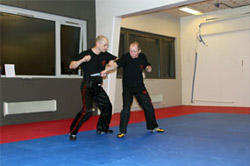
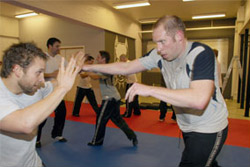
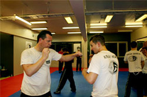
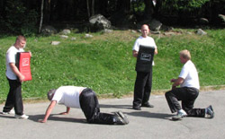
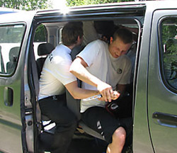
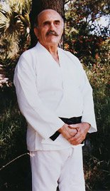
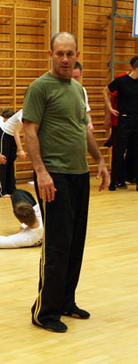

Om Krav Maga
Krav Maga baserer seg pÅ instinktreaksjoner kombinert med grovmotoriske bevegelser. Dette gjØr systemet eksplosivt og effektivt. Systemet passer for alle, da prinsippene er like, men tillempningen er individuell.
Vi baserer selvforsvarstreningen
vår både på det fysiske og det psykiske aspektet.
Mye går ut på og gjenkjenne en situasjon,
og vi går i dybden på hvordan en konflikt
utarter seg og trener mye scenariobasert,
etter at elevene har en ”verktøykasse” med
teknikker.
Fra seminaret med Tommy Blom, Expert
4, fra Sverige. Forsvar av tredje person.
HVORDAN TRENER VI?
Hos BBG Krav Maga
har vi trening 3 ganger pr. uke ígjennom
semesteret. Mandager og torsdager er vanlige
treninger med krav maga. Fredager er fri
treninger hvor man selv kan trene på det
man ønsker selv. Treningene følger skolekalenderen.
TRENINGSOPPLEGGET
En typisk trening
hos oss begynner med oppvarming, aerobiske
øvelser, uttøyning, kordinasjonsøvelser og
styrkeøvelser.
Siden går vi over til selvforvarstreningen,
som er hoveddelen av treningen.
Slag, spark, blokkeringer, forsvar mot ulike
grep, fastholdinger og angrep opptar den største
delen av selvforsvarstreningen. Disse teknikkene
trenes i forskjellige miljøer, stående, sittende,
liggende, mot en eller flere, uvæpnede eller
væpnede.
Treningene avsluttes gjerne med aggresjons/stress
øvelse eller sparring for de viderekommende.
Utstyr vi benytter oss av under trening er slag- eller sparkemittser og treningsvåpen.
Treningene er veldig varierte og morsomme,
man får god trening kombinert med mye læring.
VARIERENDE
For å gjøre treningen
realistiske er vi ofte ute å trener, på snø
og på ujent underlag.
Vi bruker stoler og møbler så vi får testet
at teknikkene fungerer under forskjellige
omgivelser. Vi bruker endel senariobaserte
øvelser, hvor man må løse ett eller fler
problemer ut fra egen oppfattelse. Og som
på bildet over kan teknikker testes i en
bil.
KLÆR OG UTSTYR
Klær
Vi bruker hvit KM t-shirt oh sort KM bukse.
KJØPES I KLUBBEN.
Vi trener i bryte- eller budosko. Kan kjøpes
i klubben
Rene klær og sko, kroppshygiene og klipte
negler er en nødvendighet. Man trives best
med en renslig treningspartner.
På utetreningene bruker vi noen ganger treningstøy,
andre ganger vanlige klær.
Utstyr
Ettersom krav maga inneholder kontakttrening
så er det fra begynnelsen obligatorisk med
beskyttelse, både for din egen del og for
de øvrige elevene som da kan trene med færre
begrensinger.
For nybegynnere: Suspensarium, brystbeskyttelse
for kvinner, tannbeskytter
Videregående: Suspensarium, brystbeskyttelse
for kvinner, tannbeskytter, bokse/grappling
hansker, leggbeskyttelse.
Bra å ha for alle: Underarmbeskyttelse og
vannflaske.
Alt utstyr kan kjøpes i klubben.
Fra treninger




Krav Maga - historien

Imi Sde-Or

Eyal Yanilov
Arbeidet i de følgende årene og fram til i dag, har vært fokusert på å designe systemet slik at det fungerer i situasjoner som kan oppstå i hverdagen eller i situasjoner som kan oppstå på gata. Imi og hans seniorstudenter tok for seg oppgaven å designe Krav Maga som et komplett system. Imi`s nærmeste assistent fra 80-tallet og fram til Imis död heter Eyal Yanilov. Eyal ble tildelt ansvaret for å knyte sammen de løse trådene som fantes innenfor systemet, og han fikk også oppgaven med å skape et respektert kampsystem ut av Krav Maga. Et interessant resultat av dette var Krav Maga´s bruk av belter. I det tidlige system brukte ikke Imi belter på trening, fordi det var et militært system. Men siden Imi søkte anerkjennelse fra utøvere av andre kampsporter, skapte han et beltesystem basert på Judo med hvit, gult, orange, grönt, blått, brunt, og svart belte.
Nye problemer ble oppdaget underveis, og med hjelp av sine seniorinstruktører satte Imi igang med å finne løsninger på disse problemene. Kjernen i Krav Maga har alltid vært enkelhet og effektivitet, og Imi forsøkte alltid å finne den enkleste løsningen på de fleste problemene. Mange forandringer ble gjort i systemet både tekniskt og visuellt, men i alt som Imi gjorde glemte han aldri det grunnleggende i systemet, nemlig enkelhet, effektivitet, og realisme.
Systemet ble delt i grader slik at det ble lettere å organisere det. Imi begynte også å trene med gi (hvite judodrakter). På 90-tallet bestemte Imi seg for at belter ikke hadde noen plass I systemet siden de ikke fantes med i systemet fra begynnelsen av. Dessuten mente Imi at belter ikke hadde noen realistisk eller praktisk betydning i systemet. Systemet med grader ble beholdt, men beltene ble tatt bort og erstattet med et system med Practitioner/Graduate/Expert nivåer. Treningsdrakten som benyttes i dag består av svarte bukser og hvite t-skjorter. Noe land bruker fortsatt belter i sitt curriculum, men ikke på trening.
Imi og hans seniorinstruktører dannet det første Krav Maga forbundet i 1978, og i 1992 uttrykte Imi et ønske om å skape en internasjonal föderasjon for å hjelpe til med å spre systemet til hele verden. I 1995 ble hans dröm oppfylt da the International Krav Maga Federation (IKMF) ble dannet i Imis hjemby Netanya. Den 8 januar 1998 ble siste dag i da 88 år gamle Imi Licthenfelds liv.
Til idag har antall elever som trener stilen økt kraftig. IKMF har nå lokale forbund og tilknyttninger i Israel, USA, Frankrike, Sverige, Finland, Norge, Danmark, England, Irland, Ny Zealand, Australia, Brasil, og Thailand. Krav Maga blir fortsatt brukt hver dag i IDF,i spesialstyrkene, i politiet og sikkerhetsstyrkene i Israel, og av mange andre eliteavdelinger i USA, Syd-amerika, Europa, og i andre deler av verden. Stilen har også blitt, som Imi ønsket å skape den, en viktig kilde for folk som ønsker å lære seg sivilt selvforsvar.
" ...so that you may walk in peace…”
Treningssenteret
DU FINNER OSS HER
Gamle Leirdalsvei 7, 1081 OSLO.